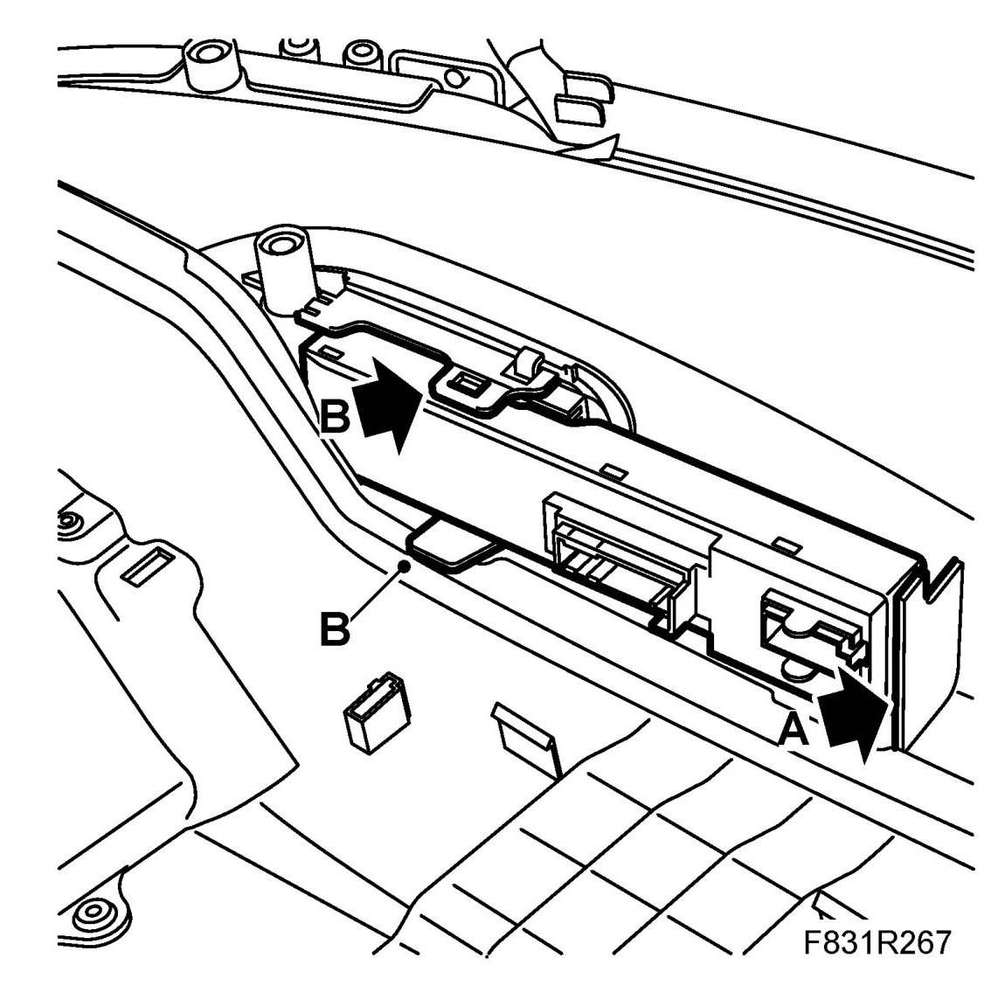
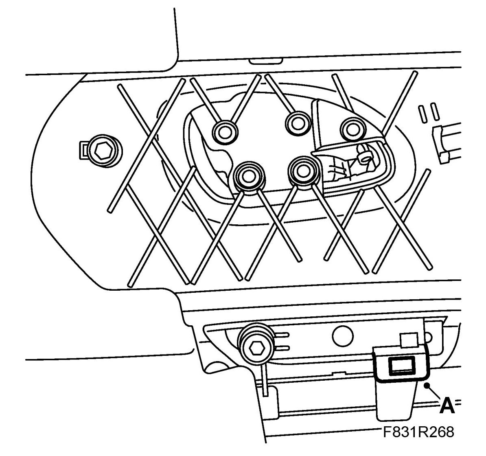
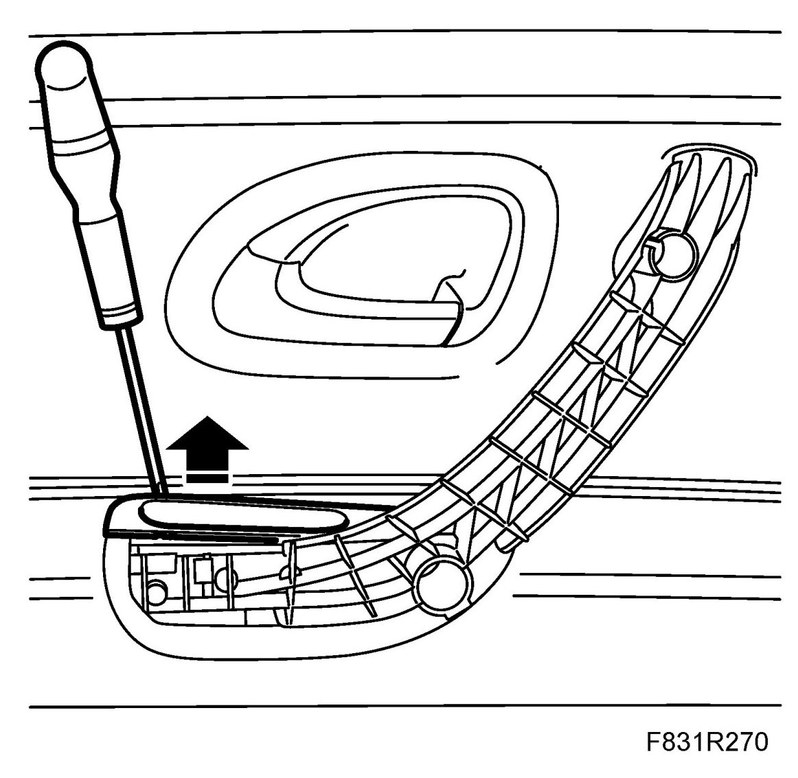
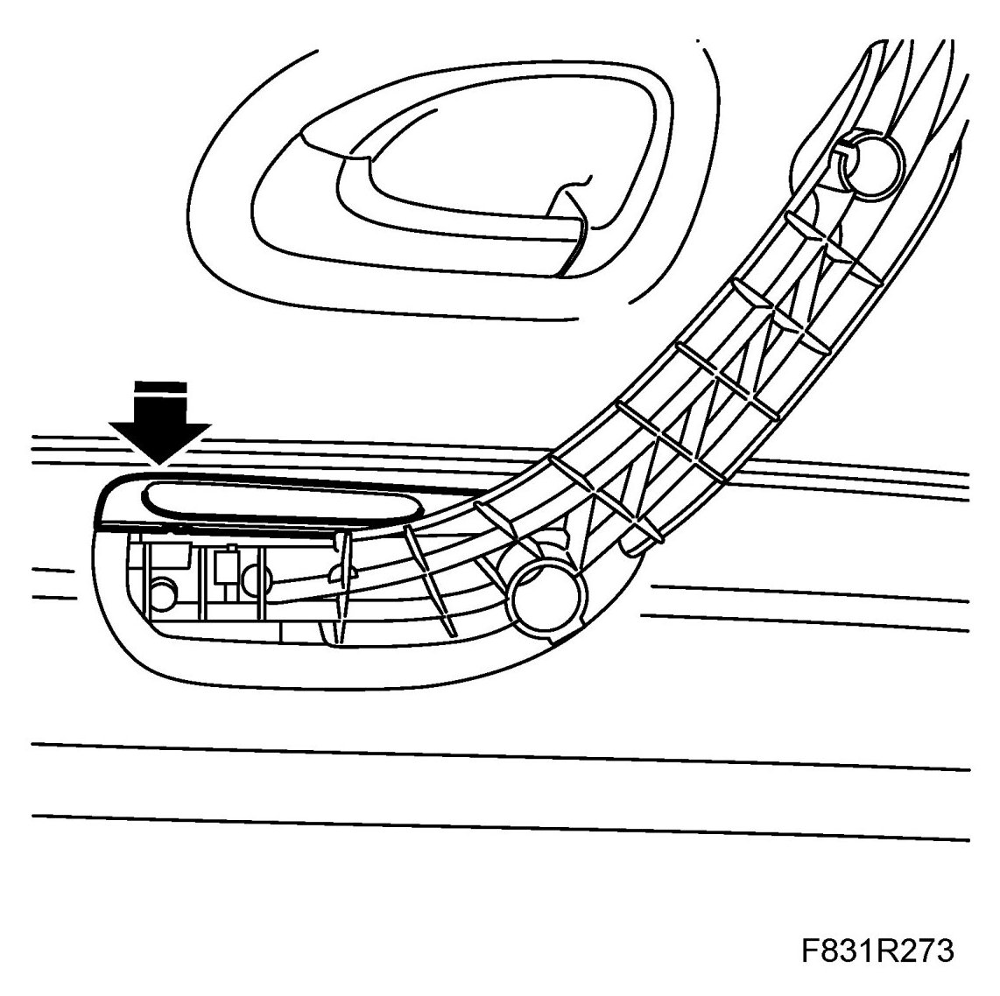
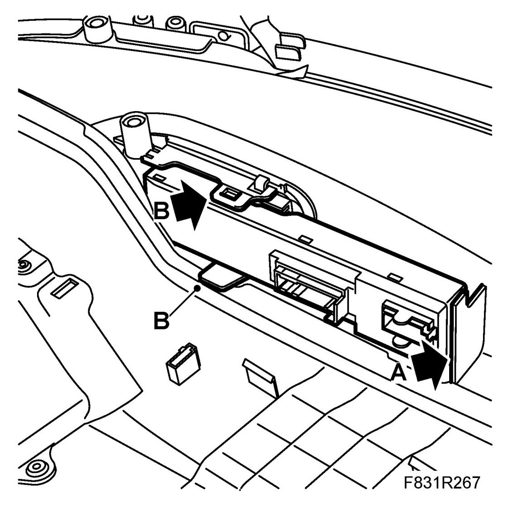

Power Window Switch: Service and Repair
Cover, Rear Switch, Window Lift
To remove
1. Remove Rear door trim
2. Remove the door module.
- First detach the rear clip (A). Use a screwdriver.

- Then detach the clips (B) on the sides of the door module.
- Carefully pull the door module backwards/downwards.
3. Remove the cover.
- Detach the locking catches (A) from their mountings.

IMPORTANT: Make sure that the catches do not fasten in the trim.
- Remove the cover by pressing it upwards. Use a screwdriver.

To fit
1. Fit the cover.

2. Fit the door module. Make sure that the retaining clips lock (A/B).

3. Fit Rear door trim.